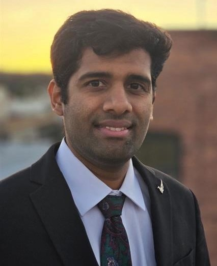

People
Researchers building integrated circuits and systems for next-generation wireless, sensing, and flexible platforms.

Sreeni Poolakkal
Assistant Professor
Electrical Engineering and Computer Science
Oregon State University
Sreeni Poolakkal is an assistant professor in the School of Electrical Engineering and Computer Science at Oregon State University. He received his Ph.D. from Washington State University, his M.Tech. from the Indian Institute of Technology Guwahati, and his B.Tech. from the University of Calicut. His research focuses on RF and millimeter-wave integrated circuits and systems for next-generation wireless technologies, including wideband phased-array transceivers, integrated sensing and communication, time-domain signal processing, flexible antenna arrays, statistical optimization-based design, and AI-assisted RFIC design. He was a recipient of the Outstanding Research Assistant Award, the Johnson Electrical Engineering Scholarship, and the Harold and Diana Frank Electrical Engineering Fellowship in 2025 from the School of Electrical Engineering and Computer Science, Washington State University.
Aidan Covey
Ph.D. Student
Electrical Engineering and Computer Science
Oregon State University
Aidan Covey earned his B.S. in Computer Engineering from Washington State University in 2026. He is currently pursuing a Ph.D. in Electrical and Computer Engineering at Oregon State University. His research interests include hardware design using statistical optimization and AI-assisted RFIC design.
Join our team
We are currently looking for motivated Ph.D. and M.S. students to join the RFCAS Lab at Oregon State University. If you are interested in our research, please email your CV, academic transcripts, and a brief cover letter describing your research interests.
sreeni.poolakkal@oregonstate.edu